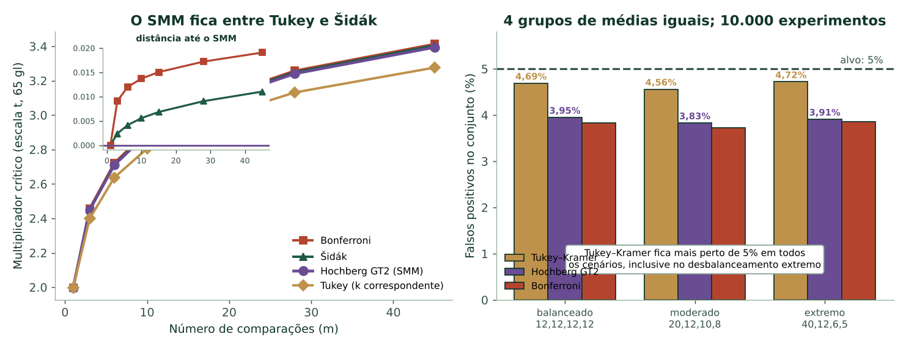
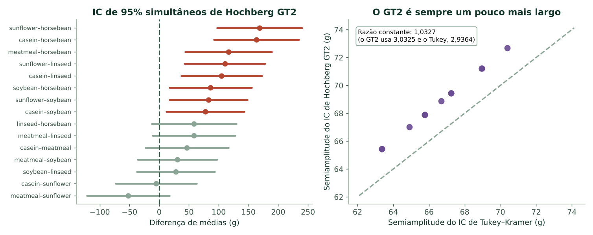

Hochberg GT2
Compara todas as médias duas a duas usando o módulo máximo estudentizado, sem depender do balanceamento dos grupos.
Comece por aqui
Quando os grupos têm tamanhos muito diferentes, o procedimento de Tukey precisa ser adaptado — é a versão de Tukey–Kramer. Nos anos 1970 não se sabia se essa adaptação continuava controlando a taxa de erro do conjunto, e Hochberg propôs em 1974 uma alternativa que não dependia do balanceamento. O procedimento GT2 é essa alternativa, e a sua história é instrutiva.
Dez anos depois da proposta de Hochberg, Hayter demonstrou que o Tukey–Kramer de fato controla a taxa de erro do conjunto com grupos desiguais, e que é até conservador. Com isso o GT2 perdeu a sua motivação original. Esta ficha o apresenta porque ele continua disponível em programas estatísticos muito usados — e porque entender por que ele existe ajuda a entender o que o Tukey faz.
O que é o procedimento
O GT2 usa o mesmo tipo de estatística que os ajustes do tipo Bonferroni — uma diferença dividida pelo seu erro-padrão —, mas calcula o valor crítico a partir da distribuição do módulo máximo estudentizado: a distribuição do maior valor absoluto entre \(m\) estatísticas \(t\) que compartilham o mesmo denominador. Isso incorpora a dependência que vem do quadrado médio do resíduo comum, mas não a que vem de as médias aparecerem em várias comparações.

O resultado contraria a motivação histórica do procedimento: o Tukey–Kramer fica mais perto de 5% em todos os cenários, inclusive no desbalanceamento extremo (40, 12, 6 e 5 observações), enquanto o GT2 gasta menos de 4%. Os dois controlam a taxa de erro; o Tukey–Kramer apenas a usa melhor.
Pressupostos e como verificá-los
| Pressuposto | Por que importa | Como verificar |
|---|---|---|
| Observações independentes | O mesmo da ANOVA. | Delineamento. |
| Resíduos aproximadamente normais | Sustenta a distribuição do módulo máximo. | shapiro.test(residuals(modelo)). |
| Variâncias homogêneas | Usa um único QM do resíduo. | Levene e Brown-Forsythe; se falhar, Games–Howell ou Dunnett C. |
| Grupos de tamanhos quaisquer | Não exige balanceamento: é a sua característica distintiva. | — |
| Todas as comparações compartilhando o mesmo QM do resíduo | É isso que a distribuição do módulo máximo pressupõe. | Natureza do modelo. |
Hipóteses e estatística de teste
em que \(m_{\alpha;m,\nu}\) é o quantil superior do módulo máximo estudentizado, cuja função de distribuição é
Em que:
- \(m\)
- número de comparações da família
- \(\nu\)
- graus de liberdade do resíduo
- \(\Phi\)
- função de distribuição da normal padrão
- \(f_S\)
- densidade da raiz de um qui-quadrado dividido pelos seus graus de liberdade
- \(m_{\alpha;m,\nu}\)
- valor crítico do procedimento
Exemplo numérico, passo a passo
Com seis rações, m = 15 comparações, QM do resíduo = 3 008,554 e ν = 65 graus de liberdade, a integração numérica devolve \(m_{0{,}05;\,15,\,65}=3{,}0325\).
Com \(m=1\) a distribuição do módulo máximo se reduz à do \(|t|\): o cálculo devolve 1,9971, exatamente o \(t_{0{,}975;\,65}\). É a verificação mínima de que a integração está correta.
A diferença é 168,72 g e o erro-padrão, \(\sqrt{3\,008{,}554\,(1/12+1/10)}=23{,}485\).
O intervalo simultâneo é \[\begin{aligned}&168{,}72\pm3{,}0325\times23{,}485 \\ &= [97{,}50;\ 239{,}94]\end{aligned}\] g, contra \([99{,}75;\ 237{,}68]\) do Tukey–Kramer — 3,3% mais largo.
A posição do GT2 entre os procedimentos
| m | Tukey (k correspondente) | Hochberg GT2 | Šidák | Bonferroni |
|---|---|---|---|---|
| 1 | 1,9971 | 1,9971 | 1,9971 | 1,9971 |
| 3 | 2,3985 | 2,4484 | 2,4508 | 2,4575 |
| 6 | 2,6368 | 2,7094 | 2,7136 | 2,7214 |
| 10 | 2,8058 | 2,8923 | 2,8979 | 2,9060 |
| 15 | 2,9364 | 3,0325 | 3,0393 | 3,0476 |
| 28 | 3,1318 | 3,2408 | 3,2499 | 3,2580 |
| 45 | 3,2759 | 3,3937 | 3,4047 | 3,4128 |
A ordenação é sempre a mesma: Tukey < GT2 < Šidák < Bonferroni. O GT2 captura parte da dependência entre as comparações — a que vem do denominador comum — mas não a que vem de cada média participar de várias comparações, que é o que o Tukey aproveita.
Propriedades
- Controla a taxa de erro do conjunto com grupos de quaisquer tamanhos.
- É sempre mais conservador que o Tukey–Kramer e menos conservador que Šidák e Bonferroni.
- Fornece intervalos de confiança simultâneos, com a mesma largura relativa em todos os pares.
- Vale para qualquer família de comparações que compartilhem o mesmo quadrado médio do resíduo, não apenas para todas as comparações pareadas.
- O procedimento de Gabriel é uma variante que usa o erro-padrão de cada média, permitindo uma leitura gráfica por sobreposição de intervalos.
- Não está implementado no R base; o SPSS o oferece com o nome "Hochberg’s GT2".
Como interpretar os resultados
| Elemento | O que informa | Cuidado |
|---|---|---|
| Valor crítico | O multiplicador aplicado a todos os pares. | Único para toda a família. |
| p ajustado | Já incorpora todas as comparações. | Vem da distribuição do módulo máximo. |
| IC simultâneos | Cobertura conjunta de 95%. | Ligeiramente mais largos que os de Tukey. |
| Comparação com Tukey | A razão entre os multiplicadores é constante. | Aqui, 3,0325 / 2,9364 = 1,0327. |
| Tamanhos dos grupos | Não afetam o valor crítico. | É a característica distintiva do procedimento. |
Reporte o procedimento, o valor crítico, as diferenças com intervalos simultâneos e os valores-p ajustados. Como o procedimento é menos conhecido, vale informar também o resultado do Tukey–Kramer.
Como executar no R e em Python
Onde executar o código em Python
Não é preciso instalar nada: o Google Colab é um computador na nuvem, gratuito, que executa Python pelo navegador e já traz as bibliotecas usadas aqui (numpy, scipy e matplotlib).
Não há função no R base nem nos pacotes de comparações múltiplas mais usados. O módulo máximo estudentizado pode ser obtido por integração numérica com integrate() e uniroot(), como no código acima — são poucas linhas e o resultado é exato até a precisão da quadratura. O pacote SMMT, no CRAN, traz a distribuição pronta. No SPSS o procedimento aparece na lista de post hoc como "Hochberg’s GT2" e o de Gabriel logo abaixo.
crit <- smm_ppf(1 - 0.05, m, gl) # ver a definição no bloco completo
abs(dif) / ep > crit # decisão para cada par
Exemplo de aplicação
Contexto dos dados
chickwts registra o peso, aos seis dias, de 71 pintinhos alimentados com seis rações diferentes. Os grupos têm tamanhos ligeiramente desiguais (de 10 a 14 aves), os resíduos passam no teste de normalidade (p = 0,627) e as variâncias são homogêneas (Brown–Forsythe p = 0,590). A ANOVA devolve F(5; 65) = 15,365 com p = 5,9 × 10⁻¹⁰: há diferença, e a pergunta passa a ser onde. Com seis rações são quinze comparações — e é esse número que cria o problema de multiplicidade. As fichas de Bonferroni, Šidák, Tukey e Games–Howell usam este mesmo conjunto, para que os resultados possam ser comparados diretamente.
Código em R
# Hochberg GT2: exemplo completo ----
# Pacotes: stats (base, para a implementação direta). O SPSS traz o GT2 pronto;
# no R, o caminho mais curto é calcular o módulo máximo estudentizado.
# Alternativas: mutoss, SMMT (CRAN), ou integração numérica, como abaixo.
# 1. A distribuição do módulo máximo estudentizado, por integração numérica
smm_cdf <- function(h, m, nu) {
integrate(function(s) (2 * pnorm(h * s) - 1)^m * dchisq(s^2 * nu, nu) * 2 * nu * s,
0, Inf)$value
}
smm_ppf <- function(p, m, nu) uniroot(function(h) smm_cdf(h, m, nu) - p, c(0.5, 12))$root
# 2. Dados: chickwts, peso de pintinhos por tipo de ração
data(chickwts)
modelo <- aov(weight ~ feed, data = chickwts)
summary(modelo)
k <- nlevels(chickwts$feed); gl <- df.residual(modelo)
QM <- sum(residuals(modelo)^2) / gl
m <- k * (k - 1) / 2
table(chickwts$feed) # n desiguais: 10 a 14
# 3. O valor crítico
alfa <- 0.05
(crit <- smm_ppf(1 - alfa, m, gl))
# verificação: com m = 1 ele deve coincidir com o t bilateral
c(smm = smm_ppf(1 - alfa, 1, gl), t = qt(1 - alfa/2, gl))
# 4. Lado a lado com os demais multiplicadores
c(sem_ajuste = qt(1 - alfa/2, gl),
tukey = qtukey(1 - alfa, k, gl) / sqrt(2),
gt2 = crit,
sidak = qt(1 - (1 - (1 - alfa)^(1/m))/2, gl),
bonferroni = qt(1 - alfa/(2*m), gl),
scheffe = sqrt((k - 1) * qf(1 - alfa, k - 1, gl)))
# 5. As comparações
medias <- tapply(chickwts$weight, chickwts$feed, mean)
ns <- table(chickwts$feed)
pares <- combn(levels(chickwts$feed), 2)
resultado <- t(apply(pares, 2, function(p_) {
d <- medias[p_[2]] - medias[p_[1]]
ep <- sqrt(QM * (1/ns[p_[1]] + 1/ns[p_[2]]))
t_ <- abs(d) / ep
c(diferenca = d, ep = ep, t = t_,
p_ajustado = 1 - smm_cdf(t_, m, gl),
inferior = d - crit * ep, superior = d + crit * ep)
}))
rownames(resultado) <- apply(pares, 2, paste, collapse = " - ")
round(resultado[order(resultado[, "p_ajustado"]), ], 5)
# 6. Para comparar, Tukey-Kramer
TukeyHSD(modelo)
# 7. O procedimento de Gabriel, uma variante do GT2
# usa o mesmo valor crítico, mas o erro-padrão de cada MÉDIA, e não do par:
# os intervalos de cada média são desenhados e a sobreposição decide.
eps <- sqrt(QM / ns)
ic_gabriel <- cbind(inferior = medias - crit * eps / sqrt(2),
superior = medias + crit * eps / sqrt(2))
round(ic_gabriel, 2)
# 8. Gráfico
par(mar = c(5, 11, 4, 2))
plot(TukeyHSD(modelo), las = 1, cex.axis = 0.7)
par(mar = c(5, 4, 4, 2))
A mesma análise em Python, com os resultados
Cole o código em um notebook do Google Colab ↗ e execute com Shift+Enter. Os valores abaixo são a saída desse código.
# Bibliotecas: numpy, scipy e matplotlib (já instaladas no Google Colab)
import numpy as np
from scipy import stats, integrate
import itertools
alfa = 0.05
# A distribuição do módulo máximo estudentizado, que o procedimento usa.
# Não está no scipy: calcula-se por integração numérica.
def smm_cdf(h, m, nu):
"""P(máximo de |t_1|,...,|t_m| <= h), com t_i normais padronizadas por um mesmo s."""
f = lambda s: (2*stats.norm.cdf(h*s) - 1)**m * stats.chi2.pdf(s*s*nu, nu) * 2*nu*s
return integrate.quad(f, 0, np.inf, limit=200)[0]
def smm_sf(h, m, nu):
return max(0.0, 1 - smm_cdf(h, m, nu))
def smm_ppf(p, m, nu):
lo, hi = 0.5, 12.0
for _ in range(60):
mid = (lo + hi) / 2
if smm_cdf(mid, m, nu) < p: lo = mid
else: hi = mid
return (lo + hi) / 2
# Dados: chickwts (R). Peso (g) de 71 pintinhos aos 6 dias, segundo seis rações.
# É o mesmo conjunto das fichas de Bonferroni, Šidák, Tukey, REGW e Duncan.
dados = {
"horsebean": [179,160,136,227,217,168,108,124,143,140],
"linseed": [309,229,181,141,260,203,148,169,213,257,244,271],
"soybean": [243,230,248,327,329,250,193,271,316,267,199,171,158,248],
"sunflower": [423,340,392,339,341,226,320,295,334,322,297,318],
"meatmeal": [325,257,303,315,380,153,263,242,206,344,258],
"casein": [368,390,379,260,404,318,352,359,216,222,283,332]}
nomes = list(dados); gs = [np.array(v, float) for v in dados.values()]
k = len(gs); ns = np.array([len(g) for g in gs], float); N = int(ns.sum())
medias = np.array([g.mean() for g in gs]); vars_ = np.array([g.var(ddof=1) for g in gs])
QM = np.sum((ns - 1) * vars_) / (N - k); gl = N - k
m = k * (k - 1) // 2
print("ração n média DP")
for i in np.argsort(-medias):
print(f"{nomes[i]:<12}{int(ns[i]):2d} {medias[i]:7.3f} {np.sqrt(vars_[i]):6.2f}")
print(f"\nANOVA: F({k-1}; {gl}) = {stats.f_oneway(*gs)[0]:.4f}, p = {stats.f_oneway(*gs)[1]:.3e}")
print(f"QM do resíduo = {QM:.4f} | gl = {gl} | m = {m} comparações")
print(f"Tamanhos dos grupos: {ns.astype(int)} (desiguais)")
# 1. O valor crítico: o módulo máximo estudentizado
crit = smm_ppf(1 - alfa, m, gl)
print(f"\nMódulo máximo estudentizado: m({alfa}; {m}; {gl}) = {crit:.4f}")
print("Confira que a distribuição está correta: com m = 1 ele deve ser o t comum.")
print(f" m(0,05; 1; {gl}) = {smm_ppf(1-alfa, 1, gl):.4f} | t(0,975; {gl}) = {stats.t.ppf(1-alfa/2, gl):.4f}")
print("\nComo o valor crítico cresce com o número de comparações")
print(" m SMM Šidák Bonferroni Tukey (q/raiz2, k correspondente)")
for mm, kk in [(1, 2), (3, 3), (6, 4), (10, 5), (15, 6), (28, 8), (45, 10)]:
print(f" {mm:3d} {smm_ppf(1-alfa, mm, gl):6.4f} {stats.t.ppf(1-(1-(1-alfa)**(1/mm))/2, gl):9.4f}"
f" {stats.t.ppf(1-alfa/(2*mm), gl):12.4f} {stats.studentized_range.ppf(1-alfa, kk, gl)/np.sqrt(2):12.4f}")
print("O SMM fica sempre entre Tukey e Šidák: é mais exato que Šidák, porque")
print("incorpora o fato de todas as comparações dividirem o mesmo QM do resíduo,")
print("mas ignora a dependência entre as médias, que é o que o Tukey aproveita.")
# 2. As comparações
print(f"\nHochberg GT2 ({m} comparações)")
print(f"{'comparação':<26}{'dif.':>9}{'EP':>8}{'t':>8}{'p ajust.':>11}{'IC 95%':>24}")
linhas = []
for a, b in itertools.combinations(range(k), 2):
dif = medias[b] - medias[a]
ep = np.sqrt(QM * (1/ns[a] + 1/ns[b]))
t = abs(dif) / ep
p = smm_sf(t, m, gl)
linhas.append((f"{nomes[b]} - {nomes[a]}", dif, ep, t, p, dif - crit*ep, dif + crit*ep))
for nm_, dif, ep, t, p, lo, hi in sorted(linhas, key=lambda x: x[4]):
print(f"{nm_:<26}{dif:9.2f}{ep:8.3f}{t:8.3f}{p:11.5f}{'*' if p<alfa else ' '}"
f" [{lo:8.2f}; {hi:8.2f}]")
print(f"\nSignificativas: {sum(1 for l in linhas if l[4] < alfa)} de {m}")
# 3. Comparação com os demais procedimentos
print("\nMultiplicadores críticos e largura do IC de sunflower - horsebean")
i = [l[0] for l in linhas].index("sunflower - horsebean")
dif, ep = linhas[i][1], linhas[i][2]
for nome, c in [("LSD (sem ajuste)", stats.t.ppf(1-alfa/2, gl)),
("Tukey-Kramer", stats.studentized_range.ppf(1-alfa, k, gl)/np.sqrt(2)),
("Hochberg GT2 (SMM)", crit),
("Šidák", stats.t.ppf(1-(1-(1-alfa)**(1/m))/2, gl)),
("Bonferroni", stats.t.ppf(1-alfa/(2*m), gl)),
("Scheffé", np.sqrt((k-1)*stats.f.ppf(1-alfa, k-1, gl)))]:
print(f" {nome:<20}{c:7.4f} IC = [{dif-c*ep:7.2f}; {dif+c*ep:7.2f}] (largura {2*c*ep:6.2f} g)")
tuk = [stats.studentized_range.sf(abs(medias[b]-medias[a])/np.sqrt(QM/2*(1/ns[a]+1/ns[b])), k, gl)
for a, b in itertools.combinations(range(k), 2)]
bon = [min(1, m*2*stats.t.sf(abs(medias[b]-medias[a])/np.sqrt(QM*(1/ns[a]+1/ns[b])), gl))
for a, b in itertools.combinations(range(k), 2)]
print(f"\nSignificativas: Tukey {sum(p<alfa for p in tuk)} | GT2 {sum(1 for l in linhas if l[4]<alfa)}"
f" | Bonferroni {sum(p<alfa for p in bon)}")
# 4. Onde o GT2 foi pensado para ajudar: n muito desiguais
print("\nSimulação: taxa de erro do conjunto com 4 grupos de médias IGUAIS")
print("(10.000 experimentos; variâncias iguais, tamanhos muito diferentes)")
rng = np.random.default_rng(404)
M = 10000
mm4 = 6
for titulo, ns4 in [("balanceado: 12, 12, 12, 12", [12, 12, 12, 12]),
("moderado: 20, 12, 10, 8", [20, 12, 10, 8]),
("extremo: 40, 12, 6, 5", [40, 12, 6, 5])]:
nn = np.array(ns4, float); Nt = int(nn.sum()); glr = Nt - 4
q_t = stats.studentized_range.ppf(1-alfa, 4, glr)
c_g = smm_ppf(1-alfa, mm4, glr)
c_b = stats.t.ppf(1-alfa/(2*mm4), glr)
rej_t = rej_g = rej_b = 0
for _ in range(M):
g4 = [rng.normal(0, 1, int(x)) for x in ns4]
mu = np.array([g.mean() for g in g4]); vv = np.array([g.var(ddof=1) for g in g4])
qmr = np.sum((nn-1)*vv)/glr
at = ag = ab = False
for a, b in itertools.combinations(range(4), 2):
d = abs(mu[b]-mu[a])
if d/np.sqrt(qmr/2*(1/nn[a]+1/nn[b])) > q_t: at = True
tt = d/np.sqrt(qmr*(1/nn[a]+1/nn[b]))
if tt > c_g: ag = True
if tt > c_b: ab = True
rej_t += at; rej_g += ag; rej_b += ab
print(f" {titulo}: Tukey-Kramer {100*rej_t/M:5.2f}% GT2 {100*rej_g/M:5.2f}% "
f"Bonferroni {100*rej_b/M:5.2f}%")
print("\nOs três controlam a taxa de erro em todos os cenários, mas o resultado")
print("contraria a motivação histórica do GT2: Tukey-Kramer fica mais perto de 5%")
print("em TODOS eles, inclusive no desbalanceamento extremo, enquanto o GT2 gasta")
print("menos de 4%. O GT2 foi proposto em 1974, quando ainda não se sabia se o")
print("Tukey-Kramer controlava a taxa de erro com n desiguais; Hayter provou em")
print("1984 que sim. Desde então o GT2 deixou de ter vantagem nas comparações")
print("pareadas, e sua utilidade está em outro lugar: ele vale para QUALQUER")
print("conjunto de comparações que dividam o mesmo QM do resíduo, inclusive")
print("conjuntos em que o Tukey não se aplica.")
Resultados da execução
ração n média DP sunflower 12 328.917 48.84 casein 12 323.583 64.43 meatmeal 11 276.909 64.90 soybean 14 246.429 54.13 linseed 12 218.750 52.24 horsebean 10 160.200 38.63 ANOVA: F(5; 65) = 15.3648, p = 5.936e-10 QM do resíduo = 3008.5542 | gl = 65 | m = 15 comparações Tamanhos dos grupos: [10 12 14 12 11 12] (desiguais) Módulo máximo estudentizado: m(0.05; 15; 65) = 3.0325 Confira que a distribuição está correta: com m = 1 ele deve ser o t comum. m(0,05; 1; 65) = 1.9971 | t(0,975; 65) = 1.9971 Como o valor crítico cresce com o número de comparações m SMM Šidák Bonferroni Tukey (q/raiz2, k correspondente) 1 1.9971 1.9971 1.9971 1.9971 3 2.4484 2.4508 2.4575 2.3985 6 2.7094 2.7136 2.7214 2.6368 10 2.8923 2.8979 2.9060 2.8058 15 3.0325 3.0393 3.0476 2.9364 28 3.2408 3.2499 3.2580 3.1318 45 3.3937 3.4047 3.4128 3.2759 O SMM fica sempre entre Tukey e Šidák: é mais exato que Šidák, porque incorpora o fato de todas as comparações dividirem o mesmo QM do resíduo, mas ignora a dependência entre as médias, que é o que o Tukey aproveita. Hochberg GT2 (15 comparações) comparação dif. EP t p ajust. IC 95% sunflower - horsebean 168.72 23.485 7.184 0.00000* [ 97.50; 239.94] casein - horsebean 163.38 23.485 6.957 0.00000* [ 92.16; 234.60] sunflower - linseed 110.17 22.393 4.920 0.00009* [ 42.26; 178.07] meatmeal - horsebean 116.71 23.966 4.870 0.00011* [ 44.03; 189.39] casein - linseed 104.83 22.393 4.682 0.00022* [ 36.93; 172.74] sunflower - soybean 82.49 21.578 3.823 0.00444* [ 17.05; 147.92] soybean - horsebean 86.23 22.710 3.797 0.00483* [ 17.36; 155.10] casein - soybean 77.15 21.578 3.576 0.00985* [ 11.72; 142.59] meatmeal - linseed 58.16 22.896 2.540 0.17807 [ -11.27; 127.59] linseed - horsebean 58.55 23.485 2.493 0.19847 [ -12.67; 129.77] meatmeal - sunflower -52.01 22.896 2.271 0.31808 [ -121.44; 17.42] casein - meatmeal 46.67 22.896 2.039 0.48328 [ -22.76; 116.11] meatmeal - soybean 30.48 22.100 1.379 0.92892 [ -36.54; 97.50] soybean - linseed 27.68 21.578 1.283 0.95876 [ -37.76; 93.11] casein - sunflower -5.33 22.393 0.238 1.00000 [ -73.24; 62.57] Significativas: 8 de 15 Multiplicadores críticos e largura do IC de sunflower - horsebean LSD (sem ajuste) 1.9971 IC = [ 121.81; 215.62] (largura 93.81 g) Tukey-Kramer 2.9364 IC = [ 99.75; 237.68] (largura 137.93 g) Hochberg GT2 (SMM) 3.0325 IC = [ 97.50; 239.94] (largura 142.44 g) Šidák 3.0393 IC = [ 97.34; 240.10] (largura 142.76 g) Bonferroni 3.0476 IC = [ 97.14; 240.29] (largura 143.15 g) Scheffé 3.4322 IC = [ 88.11; 249.32] (largura 161.21 g) Significativas: Tukey 8 | GT2 8 | Bonferroni 8 Simulação: taxa de erro do conjunto com 4 grupos de médias IGUAIS (10.000 experimentos; variâncias iguais, tamanhos muito diferentes) balanceado: 12, 12, 12, 12: Tukey-Kramer 4.69% GT2 3.95% Bonferroni 3.83% moderado: 20, 12, 10, 8: Tukey-Kramer 4.56% GT2 3.83% Bonferroni 3.73% extremo: 40, 12, 6, 5: Tukey-Kramer 4.72% GT2 3.91% Bonferroni 3.86% Os três controlam a taxa de erro em todos os cenários, mas o resultado contraria a motivação histórica do GT2: Tukey-Kramer fica mais perto de 5% em TODOS eles, inclusive no desbalanceamento extremo, enquanto o GT2 gasta menos de 4%. O GT2 foi proposto em 1974, quando ainda não se sabia se o Tukey-Kramer controlava a taxa de erro com n desiguais; Hayter provou em 1984 que sim. Desde então o GT2 deixou de ter vantagem nas comparações pareadas, e sua utilidade está em outro lugar: ele vale para QUALQUER conjunto de comparações que dividam o mesmo QM do resíduo, inclusive conjuntos em que o Tukey não se aplica.

| Elemento | Valor | Leitura |
|---|---|---|
| Valor crítico do GT2 | 3,0325 | Módulo máximo estudentizado, m = 15, ν = 65. |
| Verificação com m = 1 | 1,9971 = t(0,975; 65) | A implementação está correta. |
| Significativas pelo GT2 | 8 de 15 | — |
| Significativas pelo Tukey | 8 de 15 | As mesmas oito. |
| Significativas por Bonferroni | 8 de 15 | Idem. |
| IC de sunflower − horsebean (GT2) | [+97,50; +239,94] | Largura 142,44 g. |
| IC de sunflower − horsebean (Tukey) | [+99,75; +237,68] | Largura 137,93 g. |
| Razão entre as larguras | 1,0327 | Constante em todos os pares. |
| Simulação, balanceado | Tukey 4,69% | GT2 3,95% | Bonferroni 3,83% | Alvo: 5%. |
| Simulação, moderado (20, 12, 10, 8) | Tukey 4,56% | GT2 3,83% | Bonferroni 3,73% | — |
| Simulação, extremo (40, 12, 6, 5) | Tukey 4,72% | GT2 3,91% | Bonferroni 3,86% | — |
Leitura: os dois procedimentos chegam às mesmas oito conclusões, e os intervalos do GT2 são cerca de 3% mais largos. Em termos práticos, para estes dados, a escolha é indiferente.
A simulação é o ponto mais interessante da ficha. O GT2 foi proposto para o caso de grupos desbalanceados, mas é justamente aí que ele não leva vantagem: com tamanhos de 40, 12, 6 e 5, o Tukey–Kramer fica em 4,72% e o GT2 em 3,91%. A razão é que o Tukey–Kramer, embora conservador com n desiguais — como Hayter provou em 1984 —, continua aproveitando a dependência entre as médias, que o GT2 ignora.
Onde o GT2 ainda é útil
A vantagem real do procedimento não está nas comparações pareadas, e sim na sua generalidade. A distribuição do módulo máximo estudentizado vale para qualquer conjunto de combinações lineares que compartilhem o mesmo quadrado médio do resíduo: um conjunto misto de contrastes e comparações pareadas, por exemplo, ou um subconjunto escolhido de pares. Nesses casos o Tukey não se aplica — ele foi construído para a família completa de todas as comparações duas a duas — e o GT2 oferece um controle mais apertado que Bonferroni ou Šidák.
O procedimento de Gabriel, citado no código, é uma variante que usa o erro-padrão de cada média em vez do erro-padrão do par. Ele permite desenhar um intervalo para cada média e decidir por sobreposição: se os intervalos de duas médias não se tocam, elas diferem. É uma apresentação gráfica cômoda, com a ressalva de que a leitura por sobreposição só é válida quando os intervalos são construídos especificamente para isso — e não com os intervalos de confiança usuais.
Erros comuns
| Erro | Como evitar |
|---|---|
| Esperar que o GT2 supere o Tukey com grupos desiguais | A simulação mostra o contrário. |
| Confundir com o procedimento de Hochberg de 1988 | Aquele é um ajuste sequencial de valores-p; este é um procedimento de amplitude. |
| Usar com variâncias desiguais | Depende de um QM do resíduo comum; use Games–Howell. |
| Ler sobreposição de intervalos de confiança comuns como ausência de diferença | Só vale com os intervalos de Gabriel, construídos para isso. |
| Procurar a função no R base | Não existe; é preciso calcular o módulo máximo. |
| Aplicar a distribuição sem conferir com m = 1 | É a verificação mínima da implementação. |
| Tratar como procedimento de primeira escolha | Para comparações pareadas, Tukey é melhor. |
| Esquecer de informar qual procedimento foi usado | O GT2 é pouco conhecido e exige identificação explícita. |
Alternativas e fluxo de trabalho
| Procedimento | Quando preferir |
|---|---|
| Tukey–Kramer | Todas as comparações pareadas; é a primeira escolha. |
| Gabriel | Quando a apresentação gráfica por sobreposição de intervalos for desejável. |
| Šidák | Família qualquer, com testes aproximadamente independentes. |
| Bonferroni ou Holm | Família heterogênea, sem QM do resíduo comum. |
| Scheffé | Contrastes decididos depois de ver os dados. |
| Games–Howell ou Dunnett C | Variâncias heterogêneas. |
| REGW | Quando o objetivo é decidir e não estimar. |
| Dunnett | Tratamentos contra um controle. |
- Ajuste a ANOVA e verifique os pressupostos.
- Pergunte se a família é a de todas as comparações pareadas: se for, use Tukey.
- Se a família for outra, e todas as comparações compartilharem o QM do resíduo, o GT2 é uma boa opção.
- Calcule o valor crítico e confira com m = 1.
- Reporte diferenças, intervalos simultâneos e valores-p ajustados.
- Informe explicitamente o procedimento usado.
Referências desta ficha
- HOCHBERG, Yosef. Some generalizations of the T-method in simultaneous inference. Journal of Multivariate Analysis, v. 4, n. 2, p. 224-234, 1974.
- GABRIEL, K. Ruben. Simultaneous test procedures: some theory of multiple comparisons. The Annals of Mathematical Statistics, v. 40, n. 1, p. 224-250, 1969.
- HAYTER, Anthony J. A proof of the conjecture that the Tukey-Kramer multiple comparisons procedure is conservative. The Annals of Statistics, v. 12, n. 1, p. 61-75, 1984.
- STOLINE, Michael R. The status of multiple comparisons: simultaneous estimation of all pairwise comparisons in one-way ANOVA designs. The American Statistician, v. 35, n. 3, p. 134-141, 1981.
- DUNNETT, Charles W. New tables for multiple comparisons with a control. Biometrics, v. 20, n. 3, p. 482-491, 1964.
- HOCHBERG, Yosef; TAMHANE, Ajit C. Multiple comparison procedures. New York: Wiley, 1987.
- BRETZ, Frank; HOTHORN, Torsten; WESTFALL, Peter. Multiple comparisons using R. Boca Raton: Chapman and Hall/CRC, 2010.
- MILLER JR., Rupert G. Simultaneous statistical inference. 2. ed. New York: Springer, 1981.
- ANÓNIMO. Biometrika table. Biometrika, v. 35, p. 214, 1948; ver McNEIL, Donald R. Interactive data analysis. New York: Wiley, 1977. (Fonte dos dados
chickwts.) - R CORE TEAM. R: a language and environment for statistical computing. Vienna: R Foundation for Statistical Computing, 2026. Disponível em: https://www.r-project.org/. (Funções
integrate,uniroot,qtukeyeTukeyHSD.) - VIRTANEN, Pauli et al. SciPy 1.0. Nature Methods, v. 17, p. 261-272, 2020. (Função
scipy.integrate.quad, usada aqui para a distribuição do módulo máximo.) - POSIT TEAM. RStudio: integrated development environment for R. Boston: Posit Software, PBC. Disponível em: https://posit.co/download/rstudio-desktop/.
- VIRTANEN, Pauli et al. SciPy 1.0: fundamental algorithms for scientific computing in Python. Nature Methods, v. 17, p. 261-272, 2020. DOI: 10.1038/s41592-019-0686-2. (Funções do módulo
scipy.stats.) - HARRIS, Charles R. et al. Array programming with NumPy. Nature, v. 585, p. 357-362, 2020. DOI: 10.1038/s41586-020-2649-2.
- HUNTER, John D. Matplotlib: a 2D graphics environment. Computing in Science & Engineering, v. 9, n. 3, p. 90-95, 2007.
- GOOGLE. Google Colaboratory. Disponível em: https://colab.research.google.com/.
- As figuras desta ficha foram elaboradas pelo autor.

Prof. Dr. Cássius Henrique Xavier Oliveira
Professor · ICTIN/UFLA · Estatística, Confiabilidade e Ciência de Dados.
Conheça minha trajetória e projetos →